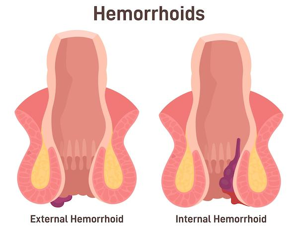
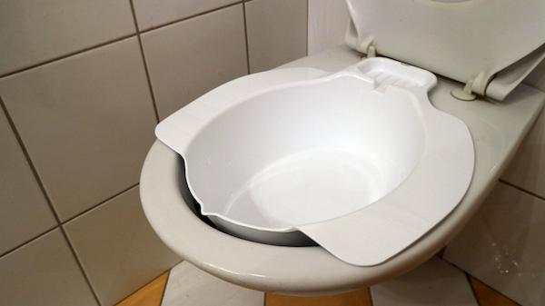

Hemorrhoid surgery removes swollen veins in or around your rectum or anus. These swollen veins are called hemorrhoids. They can cause pain, itching, and bleeding.
During the surgery, the care team removed the hemorrhoids using special tools. You were given medicine to help you sleep or relax. You may feel sore or tired afterward. You may feel pressure in the area for a few days.

Most people recover well from this surgery. Still, with any procedure, there are risks:
Bleeding
Infection
Trouble passing urine or stool
Pain or swelling
Narrowing of the anus
Hemorrhoids may come back
Incontinence of stool or gas, which may be short-term or long-term
Poor wound healing
Severe problems after a hemorrhoid surgery do not happen often, but if you have any concerns, call your care team right away.
It is normal to have pain, swelling, or light bleeding during the first few days. Stools may be painful at first. You may see some blood when you wipe. Healing takes time. You may not feel fully better for 1 to 2 weeks.
You went through a procedure that affects a private and sensitive part of the body. It is normal to feel embarrassed, tired, or frustrated. Your care team is here to support you through your recovery.
Keep the area clean and dry.
Take sitz baths by sitting in 3 to 4 inches of warm water for 10 to 20 minutes. Do this a few times a day and after bowel movements. This helps with pain and healing.
Pat dry gently with a soft cloth.
Do not use scented wipes or soaps near the area.

Go to all follow-up visits so your care team can check how you are healing.
If a dressing or packing was placed, your care team will tell you when and how to remove it.
If you had stitches, most will dissolve on their own.
Your care team may give you:
Stool softeners: These make bowel movements easier.
Pain medicine: Over-the-counter pain medicine can ease discomfort. This includes acetaminophen, brand name Tylenol®, and ibuprofen, brand name Motrin® or Advil®. Tell your care team first if you take blood thinners, have a history of bleeding or stomach ulcers, or have a history of kidney or liver disease.
Antibiotics: If you are given antibiotics, make sure to finish all of them. If you stop early, the infection may not go away and can become harder to treat. Call your care team if you have any problems with your medicine.
Take it easy for the first few days.
Avoid standing or sitting for long periods.
Drink plenty of water to help soften stools.
Eat high-fiber foods like fruits, vegetables, and whole grains to prevent constipation.
Avoid spicy or greasy foods for a few days.
Take your fiber supplement as prescribed by your care team.
Use a warm sitz bath for 10 to 20 minutes a few times a day.
You may also use an ice pack wrapped in a towel for 10 minutes at a time.
Avoid lifting heavy objects.
Walk a little each day to help blood flow.
Do not drive until you can sit comfortably and are not taking strong pain medicine.
Most people can return in 1 to 2 weeks, depending on the job.
Call your care team if you have:
Fever of 100.4°F or 38°C or higher, or chills
Redness, swelling, tenderness, or warmth at the surgery site that gets worse or does not go away
Pus or unusual drainage from your rectum or around the surgery area
Severe pain that does not get better with medicine or gets worse over time
Trouble passing urine or stool, or if you cannot urinate within 8 hours after surgery
Bleeding that is more than a small amount or lasts longer than expected, or if you see blood clots
Any questions or concerns about your recovery or symptoms
Get help right away if you have:
Heavy or uncontrolled bleeding from your rectum that will not stop
Trouble breathing, chest pain, or shortness of breath
Fainting, confusion, or trouble waking up
Sudden, severe pain in your belly that does not go away
Signs of a severe allergic reaction, such as swelling of your face, lips, tongue, or throat, trouble breathing, or a sudden full-body rash
No urine in 8 hours with pain or swelling in your lower belly
Thank you for trusting us with your care. We are here to support you and want you to feel your best. Contact us with any questions.
IF YOU HAVE A MEDICAL EMERGENCY, CALL 911 OR GO TO THE EMERGENCY ROOM.
The information presented is intended for general information and educational purposes. It is not intended to replace the advice of your health care provider. Contact your health care provider if you believe you have a health problem.
Last updated May 2025
© 2025 Mytonomy, Inc. All rights reserved.